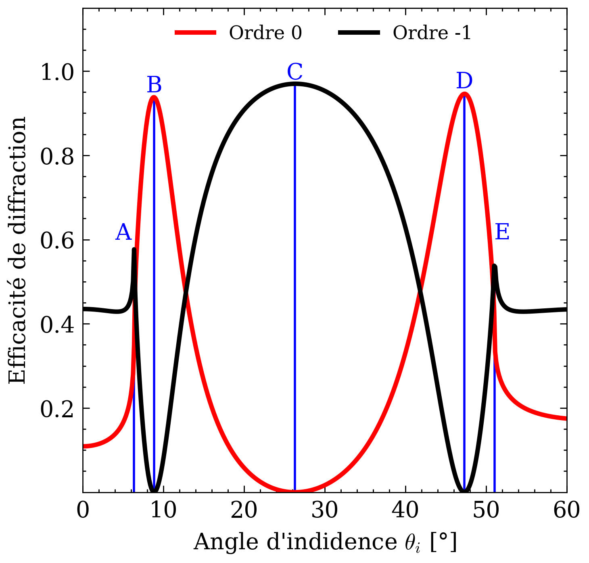

Je suis depuis Septembre 2025 enseignant-chercheur (maître de conférences) à l'IUT de Saint-Etienne au département GEII et rattaché au Laboratoire Hubert Curien dans l'équipe LMI.
Thématiques de recherche
- Irradiation laser
- Lasers ultra-brefs
- LIPSS
- Optique diffractive
- Traitement des données / Métrologie
- Plasmonique
- Nano-fabrication
- Analyse de surfaces
- Microscopie
Publications internationales
- Innovative PVD Zr–Ti–Ag Thin-Film Metallic Glasses for Dental Applications: Effect of the Silver Content on Antibacterial and Biocompatible Behaviors
N. Lebrun, H. Bruhier, V. de Feraudy, D. Pilloud, L. Berger, A. Guignandon, N. Courtois, A.-L. Chopard-Lallier, L. Preiss, F. Bourquard, J.-P. Colombier, F. Garrelie, J.-F. Pierson, M. Rousseau, C. Der Loughian et Philippe Steyer
Applied Surface Science, 2026 lien - Karren-inspired periodic nanostructures through ultrafast laser irradiation of randomly assembled carbon nanotubes
I. Bouzroud, H. Bruhier, A.-S. Loir, D. Pilloud, F. Bourquard, J. Ghanbaja, S. Migot, M. Zhu, A. Rahman Mohamed, F. Garrelie, J.-F. Pierson, C. Donnet et B. Vigolo
Applied Surface Science, 2026 lien - Antibacterial Properties of Low Silver Content ZrCu-Based PVD Thin Film Metallic Glasses: Effect of a Femtosecond Laser Texturing
N. Lebrun, H. Bruhier, Z. Fernández-Gutiérrez, C. Der Loughian, T. Michon, L. Roiban, F. Bourquard, B. Ter-Ovanessian, P. Boulet, J.-P. Colombier, F. Garrelie, J.-F. Pierson, M. Rousseau et Philippe Steyer
ACS Applied Materials & Interfaces, 2026 lien - Effective pulse number and energy distribution uniformity in laser scanning with Gaussian and cylindrical beams
H. Bruhier, F. Bourquard, F. Garrelie, P. Steyer et J.-P. Colombier
Journal of Applieds Physics, 2025 lien - Exploring 2D‐LIPSS formation under circular polarization in ultrafast laser processing
S. Georges, A. Nakhoul, V. Fedorov, P. Saby, N. Faure, H. Bruhier, N. Compère, Y. Di Maio, X. Sedao et J.‐P. Colombier
Nanophotonics, 2025 lien - Ppb detection level’s hydrogen sensor using a SPR grating in the triggered switching configuration
P. Giraud, C. Varenne, J. Brunet, A. Ndiaye, I. Verrier, H. Bruhier, A. Meyer, I. Girault, F. Arnould, F. Celle, S. Rajab Pacha, V. Gaté, D. Turover et Y. Jourlin
Optics Express, 2025 lien - Theoretical investigation of refractive index detection limit in the surface plasmon resonance-triggered switch effect
H. Bruhier, I. Verrier, J. Brunet, C. Varenne, F. Celle et Yves Jourlin
IEEE Sensors Journal, 2024 lien - Metallic glasses for biological applications and opportunities opened by laser surface texturing: A review
N. Lebrun, F. Dupla, H. Bruhier, M. Prudent, A. Borroto, C. Der Loughian, F. Bourquard, J.-M. Pelletier, M. Rousseau, J.-P. Colombier, J.-F. Pierson, F. Garrelie et P. Steyer
Applied Surface Science, 2024 lien - Influence of initial crystalline phase of TiO2 to obtain TiN thin film from sol-gel route by rapid thermal nitridation process
V. Vallejo-Otero, A. Valour, H. Bruhier, Y. Bleu, N. Ollier, Y. Lefkir, C. Donnet, N. Crespo-Monteiro et Y. Jourlin
Progress in Solid State Chemistry, 2024 lien - Characterization of perfect sinusoidal grating profile using artificial neural network for plasmonic based sensors
M. Godi, S. Robert, B. Bayard, J. Dutems, H. Bruhier, Y. Jourlin et D. Jamon
Applied Optics, 2024 lien - Common-mode plasmon sensing scheme as a high-sensitivity compact SPR sensor
H. Bruhier, J. Dutems, E. Laffont, N. Crespo-Monteiro, I. Verrier, O. Parriaux, P. Berini et Y. Jourlin
Optics Letters, 2023 lien - SiN/VO2/SiN Sandwich‐Based Resonant Waveguide Grating to Produce Thermally Activated Optical Components
Y. Bleu, H. Bruhier, T. Pouit, A. Valour, D. Jamon, N. Crespo-Monteiro, L. Dubost, F. Bourquard, C. Donnet, O. Parriaux et Y. Jourlin
Advanced Optical Materials, 2023 lien - Effect of roughness on surface plasmons propagation along deep and shallow metallic diffraction gratings
H. Bruhier, I. Verrier, T. Gueye, C. Varenne, A. Ndiaye, O. Parriaux, C. Veillas, S. Reynaud, J. Brunet et Y. Jourlin
Optics Letters, 2022 lien - Thermally activated resonant grating using a vanadium dioxide waveguide
E. K. Koussi, I. Verrier, T. Kämpfe, S. Reynaud, F. Bourquard, D. Jamon, H. Bruhier, Y. Jourlin et O. Parriaux
Optics Express, 2021 lien - Resonant waveguide grating fabrication on planar and cylindrical substrates using a photosensitive TiO2 sol-gel approach
M. A. Usuga Higuita, H. Bruhier, M. Hochedel, T. Kampfe, F. Vocanson, A. Valour, D. Jamon, M. Langlet, N. Crespo-Monteiro et Y. Jourlin
Optical Materials Express, 2021 lien - Resonant Reflection From Cylindrical Grating-Waveguide Under Holistic Excitation
E.K. Koussi, H. Bruhier, M. A. Usuga Higita, I. Verrier, C. Veillas, T. Kampfe, S. Reynaud, N. Crespo-Monteiro, O. Parriaux et Y. Jourlin
IEEE Photonics Journal, 2020 lien
Oraux et posters
- Multiscale characterization of the wettability of fs-laser textured thin film metallic glasses surfaces
H. Bruhier, N. Lebrun, Z. Fernández-Gutiérrez, V. Trillaud, C. Canas, C. Der-Loughian, F. Bourquard, M. Rousseau, J.P. Colombier, J.F. Pierson, F. Garrelie et P. Steyer
Conference On Laser Ablation 2024, 2024 oral - Multiscale wetting properties of fs-laser textured thin film metallic glasses surfaces synthetized by magnetron sputtering process
H. Bruhier, N. Lebrun, Z. Fernández-Gutiérrez, V. Trillaud, C. Canas, C. Der-Loughian, F. Bourquard, M. Rousseau, J.-P. Colombier, J.-F. Pierson, F. Garrelie et P. Steyer
PSE 2024, 2024 poster - Dental-linked biological properties of magnetron-sputtered Zr-Ti thin film metallic glasses: influence of the texturing by ultra-short laser
N. Lebrun, H. Bruhier, Z. Fernández-Gutiérrez, C. Der-Loughian, M. Rousseau, A. Guignandon, V. Trillaud, L. Preiss, A.-L. Chopard, N. Courtois, B. Ter-Ovanessian, J.-M. Pelletier, F. Bourquard, J.-P. Colombier, J.-F. Pierson, F. Garrelie et P. Steyer
PSE 2024, 2024 oral - Capteur plasmonique diffracto-interférentiel basé sur un couplage de modes de plasmon excités par réseau de diffraction
Y. Jourlin, H. Bruhier, S. Kaur, P. Giraud, E. Laffont, A. Meyer, A. Valour, N. Crespo-Monteiro, J. Brunet, A. NDiaye, C. Varenne, D. Iandolo, P. Berini et I. Verrier
Congrès Optique de la SFO, 2024 oral - Modulation of electrical, acoustic and optical properties of phthalocyanines by gas adsorption: interest for gas sensors development
J. Brunet, H. Bruhier, A. Ndiaye, S. Rajab-Pacha, C. Varenne, A. Pauly et Y. Jourlin
ICMSN2024, 2024 oral invité - Topographic, chemical and property modifications of PVD ZrCu-based thin film metallic glasses through femtosecond laser treatment
H. Bruhier, N. Lebrun, Z. Fernández-Gutiérrez, M. Prudent, A. Borroto, C. Der Loughian, F. Bourquard, M. Rousseau, S. Bruyère, S. Migot, F. Garrelie, J.F. Pierson, J.P. Colombier et P. Steyer
EMRS Spring Meeting 2024, 2024 oral - Effect of ultrashort laser texturing of Ag-enriched Zr-Ti thin film metallic glasses on their dental-linked biological properties
N. Lebrun, H. Bruhier, Z. Fernández-Gutiérrez, C. Der-Loughian, V. Trillaud, B. Ter- Ovanessian, F. Bourquard, L. Preiss, M. Rousseau, A. Guignandon, J.M. Pelletier, A.L. Chopard, N. Courtois, J.P. Colombier, J.F. Pierson, F. Garrelie et P. Steyer
EMRS Spring Meeting 2024, 2024 oral - Multiscale characterization of the wettability of thin film metallic glasses surfaces: Effect of a fs-laser treatment
H. Bruhier, N. Lebrun, Z. Fernández-Gutiérrez, V. Trillaud, C. Canas, C. Der Loughian, F. Bourquard, M. Rousseau, J.-P. Colombier, J.F. Pierson, F. Garrelie et P. Steyer
EMRS Spring Meeting 2024, 2024 oral - SPR sensor based on switch effect for very low hydrogen detection
P. Giraud, H. Bruhier, I. Verrier, S. Rajab-Pacha, C. Varenne, J. Brunet, Amadou Ndiaye et Y. Jourlin
SPIE Photonex, 2023 oral - Development of optical microsensors based on Surface Plasmon Resonance for gas measurement in atmosphere
J. Brunet, H. Bruhier, T, Gueye, S. Rajab Pacha, P. Giraud, A. Ndiaye, C. Varenne, A. Paule, I. Verrier et Y. Jourlin
Sensors 2023, 2023 oral - Changes in the wettability of femtosecond laser-textured Zr-Cu thin-film metallic glasses
H. Bruhier, N. Lebrun, Z. Fernandez-Guttierez, M. Prudent, C. Der Loughian, S. Dassonneville, A. Borroto, F. Bourquard, F. Garrelie, M. Rousseau, J.F. Pierson, J.P. Colombier et P. Steyer
11th LIPSS Workshop, 2023 oral - How to functionalize PVD ZrCu-based thin film metallic glasses? Effect of an ultrashort laser surface treatment
P. Steyer, N. Lebrun, Z. Fernández-Gutiérrez, H. Bruhier, M. Prudent, C. Der Loughian, S. Dassonneville, A. Borroto, F. Bourquard, M. Rousseau, J.F. Pierson, J.P. Colombier et F. Garrelie
Plathinium, 2023 poster - Ultrashort laser-treated PVD ZrCu-based thin film metallic glasses, biological behaviour of the surfaces
P. Steyer, N. Lebrun, Z. Fernandez-Gutierrez, H. Bruhier, M. Prudent, C. Der Loughian, S. Dassonneville, A. Borroto, F. Bourquard, F. Garrelie, M. Rousseau, J.F. Pierson et J.P. Colombier
EMRS Spring Meeting 2023, 2023 oral - Surface plasmons propagation along metallic rough diffraction gratings
H. Bruhier, I. Verrier, T. Gueye, C. Varenne, A. Ndiaye, O. Parriaux, C. Veillas, S. Reynaud, J. Brunet, Y. Jourlin
SPIE Photonics Europe 2022, 2022 lien oral - Réseau de diffraction résonant activé thermiquement par dioxyde de vanadium
H. Bruhier, E. K. Koussi, I. Verrier, T. Kampfe, S. Reynaud, F. Bourquard, D. Jamon, O. Parriaux, Y. Jourlin
Congrès Optique de la SFO, 2021 lien poster - Fabrication of a Resonant Waveguide Grating (RWG) with a single-step TiO2 sol-gel technological approach on planar and non-conventional substrate (cylinder)
M. A. Usuga Higuita, Y. Jourlin, N. Crespo-Monteiro, F. Vocanson, D. Jamon, M. Langlet, M. Hochedel, A. Valour, H. Bruhier
2nd Edition of World Nanotechnology Conference, 2021 lien oral - Resonant grating demonstration in the inner wall of a cylinder
E. K. Koussi, H. Bruhier, M. A. Usuga Higuita, I. Verrier, N. Crespo-Monteiro, O. Parriaux, Y. Jourlin
EOS- Topical meeting on diffractive optics conference, 2019, lien oral - Cylindrical Integrated Optic Resonant Reflection
E. K. Koussi, H. Bruhier, I. Verrier, N. Crespo-Monteiro, O. Parriaux, Y. Jourlin
ECIO European Conference of Integrated Optics, 2019 lien poster - Holistic excitation of a grating-coupled waveguide at the inner wall of a glass tube
E.K. Koussi, H. Bruhier, I. Verrier, C. Veillas, T. Kampfe, N. Crespo-Monteiro, D. Jamon, O. Parriaux, Y. Jourlin
Photoptics, 2019 lien oral
Projets de recherche
- AWOCAT : partenariat de MatéIS (équipe SNMS) avec le Laboratoire Hubert Curien (équipe Laser-Matter interaction), SAINBIOSE (équipe Nacre et osteoporose), l'Institut Jean Lamour (équipe Films minces pour l'énergie et applications) et l'entreprise Anthogyr. Financé par l'ANR. lien
- SAFE : partenariat de MatéIS (équipe SNMS) avec le Laboratoire Hubert Curien (équipe Laser-Matter interaction), SAINBIOSE (équipe Nacre et osteoporose) et l'Institut Jean Lamour (équipe Films minces pour l'énergie et applications). Financé par l'EUR MANUTECH SLEIGHT. lien
- CAPTAIN : partenariat du Laboratoire Hubert Curien (équipe Matériaux et surfaces fonctionnels) avec l'Institut Pascal (équipe PHOTON-MINAMAT) ainsi que les entreprises Silsef et Envea. Financé par l'Agence Nationale de la Recherche. lien
- PROTECT : partenariat du Laboratoire Hubert Curien (équipes Interaction Laser-Matière, Matériaux et surfaces fonctionnels et Architecture matérielle et sécurité des systèmes embarqués) et du Laboratoire Georges Friedel avec l'entreprise HEF. Financé par le LABEX MANUTECH SISE. lien
- MICROSOLEN : partenariat du Laboratoire Hubert Curien (équipe Matériaux et surfaces fonctionnels) avec le Laboratoire des Matériaux et du Génie Physique et l'entreprise Silsef. Financé par la région Auvergne-Rhône-Alpes.
- R2EX : partenariat du Laboratoire Hubert Curien (équipes Matériaux et surfaces fonctionnels et Interaction Laser-Matière) avec l'entreprise HEF. Financé par le LABEX MANUTECH SISE. lien
Détail des projets
PROTECT2021-2023
Principaux résultats du projet
- Synthèse de couches de VO2 avec et sans dopage par PLD et recuit rapide
- Démonstration de la modification de la température de transition de phase avec différents dopages
- Réalisation d'un réseau résonant switchable en température via un guide d'onde symétrique
Publications/conférences liées au projet
- SiN/VO2/SiN Sandwich‐Based Resonant Waveguide Grating to Produce Thermally Activated Optical Components
Y. Bleu, H. Bruhier, T. Pouit, A. Valour, D. Jamon, N. Crespo-Monteiro, L. Dubost, F. Bourquard, C. Donnet, O. Parriaux et Y. Jourlin
Advanced Optical Materials, 2023 lien - Polymorphism of VO2 thin film: M1, T, and M2 single phase synthesis using pulsed laser deposition
Y. Bleu, F. Bourquard, K. Misdanitis, A. Poulet, A.-S. Loir, F. Garrelie et C. Donnet
Materials Today Communication, 2023 lien - Thermochromic properties of BN/VO2/BN trilayer films with low phase transition temperature and high hysteresis width
Y. Bleu, F. Bourquard, A. Poulet, K. Misdanitis, D. Jamon, A.-S. Loir, F. Garrelie et C. Donnet
Ceramics International, 2023 lien - Towards Room Temperature Phase Transition of W-Doped VO2 Thin Films Deposited by Pulsed Laser Deposition: Thermochromic, Surface, and Structural Analysis
Y. Bleu, F. Bourquard, V. Barnier, A.-S. Loir, F. Garrelie et C. Donnet
Materials, 2023 lien - Tailoring thermochromic and optical properties of VO2 thin films by pulsed laser deposition using different starting routes
Y. Bleu, F. Bourquard, D. Jamon, A.-S. Loir, F. Garrelie et C. Donnet
Optical Materials, 2022 lien
NITRURATION2021-2025
Principaux résultats du projet
- Nitruration de sol-gel TiO2 et ZrO2 par recuit thermique rapide
- Réalisation de microstructures en sol-gel avant nitruration pour la création simple de structures en nitures
- Étude des propriétés physiques des films nitrurés et comparaison avec la littérature
Publications/conférences liées au projet
- Influence of Initial Crystalline Phase of TiO2 to Obtain TiN Thin Films from Sol-Gel Route by Rapid Thermal Nitridation Process
V. Vallejo-Ottero, A. Valour, H. Bruhier, Y. Bleu, N. Ollier, Y. Lefkir, C. Donnet, N. Crespo-Monteiro et Y. Jourlin
Progress in Solid State Chemistry, 2024 lien - Micro-nanostructuring by optical-lithography and nitriding of photo-patternable ZrO2 sol-gel to obtain micro-nanostructured ZrN
V. Vallejo-Ottero, N. Crespo-Monteiro, A. Valour, C. Donnet, S. Reynaud, N. Ollier, M.F. Blanc Mignon, J.P. Chatelon, Y. Bleu, E. Gamet et Y. Jourlin
SPIE Optical Systems Design, 2024 lien oral - Innovative process to obtain thin films and micro-nanostructured ZrN films from a photo-structurable ZrO2 sol-gel using rapid thermal nitridation
V. Vallejo-Ottero, N. Crespo-Monteiro, A. Valour, C. Donnet, S. Reynaud, N. Ollier, M.F. Blanc Mignon, J.P. Chatelon, Y. Bleu, E. Gamet et Y. Jourlin
Materials Today Advances, 2023 lien - Process of obtention of titanium nitride by rapid thermal annealing
V. Vallejo-Ottero, A. Valour, S. Reynaud, C. Donnet, E. Gamet, N. Crespo-Monteiro et Y. Jourlin
11th International Symposium on Nitrides, 2023 lien oral - Micro-nanostructure of titanium oxide and titanium nitride thin films for optical applications
A. Valour, V. Vallejo-Ottero, S. Reynaud, E. Gamet, N. Crespo-Monteiro et Y. Jourlin
11th International Symposium on Nitrides, 2023 lien oral - Micro-nanostructuring by optical lithography and nitridation of photo-patternable TiO2 sol-gel to obtain micro-nanostructured TiN
V. Vallejo-Ottero, N. Crespo-Monteiro, E. Gamet, S. Reynaud et Y. Jourlin
SPIE Advanced Lithography + Patterning, 2023 lien oral - Micro-nanostructuring of ZrO2 sol-gel by optical and nanoimprint lithography on various substrate for optical applications
V. Vallejo-Ottero, N. Crespo-Monteiro, E. Gamet, S. Reynaud, N. Ollier, A. Valour, M. Traynar et Y. Jourlin
SPIE Advanced Lithography + Patterning, 2023 lien poster - Innovative process of micro-nanostructure of titanium nitride (TiN) by association of a photostructurable titanium oxide (TiO2) and a rapid thermal annealing (RTA)
V. Vallejo-Ottero, A. Valour, S. Reynaud, E. Gamet, C. Donnet, N. Crespo-Monteiro et Y. Jourlin
C'Nano The nanoscience meeting, 2023 lien oral - Nouveau procédé de micro-nanostructuration de couches de nitrure de titane (TiN) par la combinaison d'un sol-gel d'oxide de titane (TiO2) et d'un recuit rapide thermique (RTA)
V. Vallejo-Ottero, A. Valour, S. Reynaud, E. Gamet, N. Crespo-Monteiro et Y. Jourlin
JNTE, 2022 lien - Versatile Zirconium Oxide (ZrO2) Sol-Gel Development for the Micro-Structuring of Various Substrates (Nature and Shape) by Optical and Nano-Imprint Lithography
N. Crespo-Monteiro, A. Valour, V. Vallejo-Ottero, M. Traynar, S. Reynaud, E. Gamet et Y. Jourlin
Materials, 2022 lien - Procédé d'obtention de nitrure de titane par recuit thermique rapide
V. Vallejo Ottero, A. Valour, M. A. Usuga Higita, S. Reynaud, C. Donnet, E. Gamet, N. Crespo-Monteiro et Y. Jourlin
JSGAuRA14, 2022 lien oral
CAPTAIN2018-2023

Principaux résultats du projet
- Fabrication (par LIL) et réplication en sol-gel de réseaux sinusoïdaux "profonds"
- Démonstration de la possibilité d'utiliser l'effet switch comme mesure de variation d'indice
- Démonstration de la grande sensibilité de la phtalocyanine de cuivre en couche mince pour la mesure de NO2 par transduction conductimétrique
- Sensibilité plasmonique de la phtalocyanine de cuivre à une gaz réducteur (NH3)
Publications/conférences liées au projet
- Development of optical microsensors based on Surface Plasmon Resonance for gas measurement in atmosphere
J. Brunet, H. Bruhier, T, Gueye, S. Rajab Pacha, P. Giraud, A. Ndiaye, C. Varenne, A. Paule, I. Verrier et Y. Jourlin
Sensors 2023, 2023 oral - Conception et caractérisation de capteurs plasmoniques et conductimétriques dédiés à la mesure de N02 et 03 pour le contrôle de la qualité de l'air
Thiaka Gueye
Thèse de doctorat, Université Clermont Auvergne, Clermont-Ferrand, 2023 - Développement d'un capteur plasmonique pour le contrôle de la qualité de l'air
H. Bruhier
Thèse de doctorat, Université Jean Monnet, Saint-Etienne, 2023 - Common-mode plasmon sensing scheme as a high-sensitivity compact SPR sensor
H. Bruhier, J. Dutems, E. Laffont, N. Crespo-Monteiro, I. Verrier, O. Parriaux, P. Berini et Y. Jourlin
Optics Letters, 2023 lien - Surface plasmons propagation along metallic rough diffraction gratings
H. Bruhier, I. Verrier, T. Gueye, C. Varenne, A. Ndiaye, O. Parriaux, C. Veillas, S. Reynaud, J. Brunet, Y. Jourlin
SPIE Photonics Europe 2022, 2022 lien oral - Effect of roughness on surface plasmons propagation along deep and shallow metallic diffraction gratings
H. Bruhier, I. Verrier, T. Gueye, C. Varenne, A. Ndiaye, O. Parriaux, C. Veillas, S. Reynaud, J. Brunet et Y. Jourlin
Optics Letters, 2022 lien - Ultra high sensitive NO2 gas microsensor for environmental monitoring or mapping urban air quality
T. Gueye, J. Brunet, A. Ndiaye, C. Varenne, E. Riuz et A. Pauly
Sensors 2021, 2021 lien oral
MICROSOLEN
Principaux résultats du projet
- Fabrication de réseaux résonants par voie sol-gel substrats plans et de forme complexe (à l'intérieur de cylindres de verre)
- Nitruration de sol TiO2 en TiN par recuit thermique rapide
- Fabrication d'un réseau plasmonique TiN via voie sol-gel et nitruration
Publications/conférences liées au projet
- Elaboration des couches micro-nanostructurées de nitrure de titane (TiN) obtenues par le procédé de nitruration de couches sol-gel TiO2
M.A. Usuga Higita
Thèse de doctorat, Université Jean Monnet, Saint-Etienne, 2022 - TiN thin film made by nitridation of TiO2 sol-gel layer and rapid thermal nitridation process (RTN)
A. Valour, M.A. Husuga Higita, N. Crespo-Monteiro, F. Vocanson, D. Jamon, S. Reynaud, C. Donnet, M. Langlet et Y. Jourlin
International Sol-Gel Conference Solgel 2022, 2022 lien oral - Micro-nanostruction de films minces d’oxyde de titane et de nitrure de titane pour des applications optiques
M.A. Usuga Higuita, A. Valour, S. Reynaud, F. Vocanson, M. Langlet, E. Gamet, N. Crespo-Monteiro et Y. Jourlin
JSGAuRA14, 2022 lien oral - Fabrication of a Resonant Waveguide Grating (RWG) with a single-step TiO2 sol-gel technological approach on planar and non-conventional substrate (cylinder)
M. A. Usuga Higuita, Y. Jourlin, N. Crespo-Monteiro, F. Vocanson, D. Jamon, M. Langlet, M. Hochedel, A. Valour, H. Bruhier
2nd Edition of World Nanotechnology Conference, 2021 lien oral - Resonant waveguide grating fabrication on planar and cylindrical substrates using a photosensitive TiO2 sol-gel approach
M.A. Usuga Higuita, H. Bruhier, M. Hochedel, T. Kampfe, F. Vocanson, A. Valour, D. Jamon, M. Langlet, N. Crespo-Monteiro et Yves Jourlin
Optical Materials Express, 2021 lien - Micro–Nanostructured TiN Thin Film: Synthesis from a Photo-Patternable TiO2 Sol–Gel Coating and Rapid Thermal Nitridation
A. Valour, M.A. Usuga Higuita, N. Crespo-Monteiro, S. Reynaud, M. Hochedel, D. Jamon, C. Donnet et Y. Jourlin
The Journal of Physical Chemistry C, 2020 lien - Technological process for the fabrication of thick titania film and deep TiO2 sol-gel grating
M.A. Usuga Higita, N. Crespo-Monteiro,F. Vocanson, M. Langlet et Y. Jourlin
JNTE, 2019 lien oral - Elaboration d’un réseau métallique par ammonolyse d’un revêtement TiO2 photogravable
M.A. Usuga Higita, N. Crespo-Monteiro, D. Jamon, F. Vocanson, I. Verrier, M. Langlet et Y. Jourlin
Journées Sol-gel 2019, 2019 lien oral
R2EX2016-2019
Principaux résultats du projet
- Fabrication de réseaux résonants sur des substrats plans et de forme complexe (à l'intérieur de cylindres de verre)
- Synthèse de dioxyde de vanadium par PLD et recuit thermique rapide et analyse de la transition de phase par voie optique
- Etude de faisabilité de l'utilisation de VO2 pour la fabrication de réseaux résonants controllés thermiquement
Publications/conférences liées au projet
- Micro patterning of complex Waveguide Resonant Gratings (WRG)
E.K. Koussi
Thèse de doctorat, Université Jean Monnet, Saint-Etienne, 2020 - Réseau de diffraction résonant activé thermiquement par dioxyde de vanadium
H. Bruhier, E. K. Koussi, I. Verrier, T. Kampfe, S. Reynaud, F. Bourquard, D. Jamon, O. Parriaux, Y. Jourlin
Congrès Optique de la SFO, 2021 lien poster - Thermally activated resonant grating using a vanadium dioxide waveguide
E. K. Koussi, I. Verrier, T. Kampfe, S. Reynaud, F. Bourquard, D. Jamon, H. Bruhier, Y. Jourlin et O. Parriaux
Optics Express, 2021 lien - Synthesis of vanadium oxides by pulsed laser deposition and rapid thermal annealing
E.K. Koussi, F. Bourquard, T. Titte, D. Jamon, F. Garrelie et Y. Jourlin
Applied Surface Science, 2020 lien - Resonant Reflection From Cylindrical Grating-Waveguide Under Holistic Excitation
E.K. Koussi, H. Bruhier, M. A. Usuga Higita, I. Verrier, C. Veillas, T. Kampfe, S. Reynaud, N. Crespo-Monteiro, O. Parriaux et Y. Jourlin
IEEE Photonics Journal, 2020 lien - Thermally activated resonant grating using vanadium dioxide synthetized by pulsed laser deposition
E.K. Koussi, F. Bourquard, T. Titte, F. Garrelie et Y. Jourlin
EMRS, 2019 lien oral - Resonant grating demonstration in the inner wall of a cylinder
E. K. Koussi, H. Bruhier, M. A. Usuga Higuita, I. Verrier, N. Crespo-Monteiro, O. Parriaux, Y. Jourlin
EOS- Topical meeting on diffractive optics conference, 2019, lien oral - Cylindrical Integrated Optic Resonant Reflection
E. K. Koussi, H. Bruhier, I. Verrier, N. Crespo-Monteiro, O. Parriaux, Y. Jourlin
ECIO European Conference of Integrated Optics, 2019 lien poster - Holistic excitation of a grating-coupled waveguide at the inner wall of a glass tube
E.K. Koussi, H. Bruhier, I. Verrier, C. Veillas, T. Kampfe, N. Crespo-Monteiro, D. Jamon, O. Parriaux, Y. Jourlin
Photoptics, 2019 lien oral
Enseignement
- 2023-2024 : TP Conditionnement des signaux analogiques (IUT). Env. 50h
- 2021-2022 : TP Conditionnement des signaux analogiques (IUT), TP Optique Ondulatoire (IUT), CM/TD Statistiques Industrielles (Ecole d'ingénieur). Env. 90h
- 2020-2021 : TP Métrologie (IUT), TP Optique Ondulatoire (IUT), TP Traitement des données (IUT), CM/TD Statistiques Industrielles (Ecole d'ingénieur). Env. 90h
- 2019-2020 : TP Métrologie (IUT), TP Optique Ondulatoire (IUT), TP Traitement des donnés (IUT). Env. 60h
Détails des cours
- CM/TD Statistiques Industrielles
Rappels des bases de probabilités et statistiques. Tests du χ2. Régression linéaire, multilinéaire et introduction à la régression non-linéaire. (Formation en alternance en Image et Photonique à Télécom Saint-Etienne, Bac+4) - TP Conditionnement des signaux analogiques
Notions à l'utilisation de la FFT sur es oscillosccopes numériques, étude et caractérisation de systèmes du deuxième ordre, oscillateur à pont de Wien, introduction à la modulation d'amplitude et introduction à l'asservissement par PID.(DUT Mesures Physiques Saint-Etienne, 2ème année et BUT Mesures Physiques Saint-Etienne, 2ème année) - TP Métrologie
Caractérisation de l'incertitude d'une chaine de mesure dans son ensemble, vérification d'appareils de mesures à partir d'étalon, incertitude par loi de propagation et introduction aux tests du χ2. (DUT Mesures Physiques Saint-Etienne, 2ème année) - TP Optique Ondulatoire
Caractérisation d'une diode laser, introduction à la polarisation, mesure optique par la figure de diffraction, filtrage spatial, mise en place d'une monochromateur et mesure de température/déformation par réseau de Bragg. (DUT Mesures Physiques Saint-Etienne, 2ème année) - TP Traitement des données
Introduction à l'utilisation d'Excel pour la métrologie : tracé de courbes et d'histogrammes, droite de régression, calcul d'incertitudes. (DUT Mesures Physiques Saint-Etienne, 1ère année)
Encadrement de stagiaires
- Mélissa Cormimboeuf (L3): Instrumentation et contrôle via Python d'un scanner laser pour irradiation sous vide
Juin 2024-Juillet 2024, co-supervisée avec Nicolas Faure et Anthony Cazier - Clémence Canas (M2): Étude de la modification de la mouillabilité de verres métalliques texturés laser
Novembre 2023-Mars 2024, co-supervisée avec Philippe Steyer et Victor Trillaud - Cécilia Perrette (M1): Caractérisation dans l'espace fréquentiel d'images MEB
Juin-Juillet 2023, co-supervisée avec Florent Bourquard - Yaël Pichon (L2): Automatisation d'un banc de mesure angulaire
Avril-Juin 2022, co-supervisé avec Yves Jourlin, Isabelle Verrier et Nicolas Crespo-Monteiro
Divers
- Membre (secrétaire (2021-2023)) du bureau fondateur de l'association ASESLEIGHT, Student Chapter d'Optica
- Membre d'un groupe de musique depuis 2017 : Mimi H Youtube & Facebook
- Animation depuis novembre 2021 d'une scène ouverte hebdomadaire le dimanche au café Les Artistes